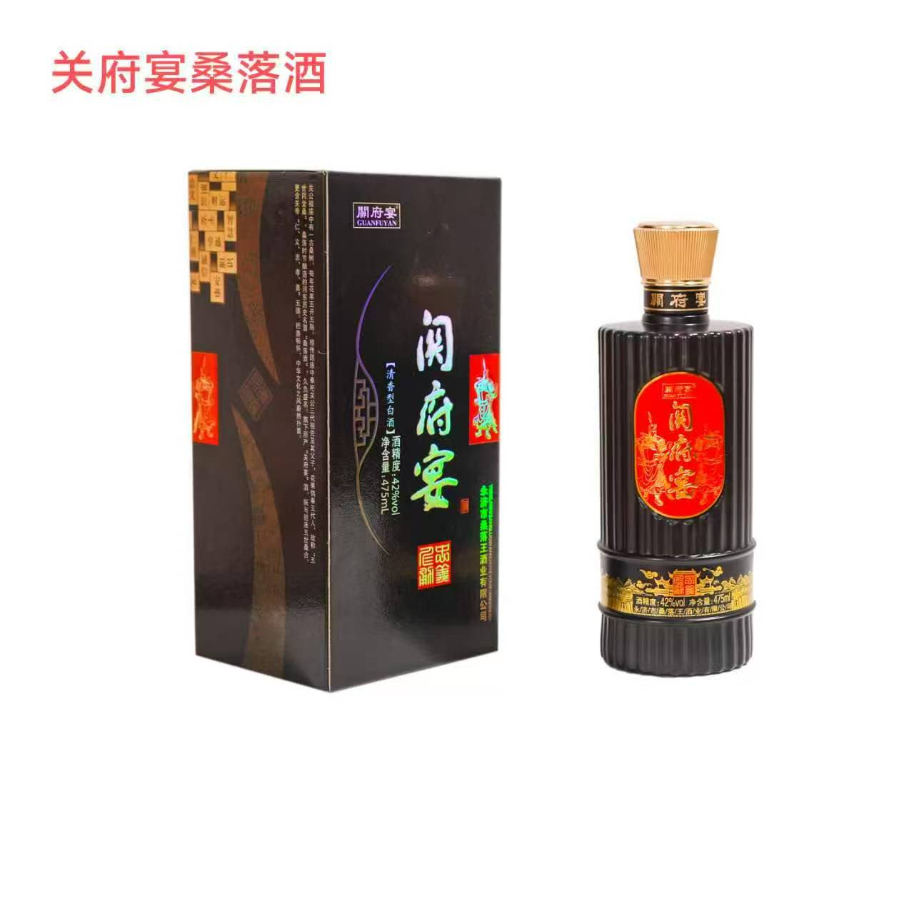
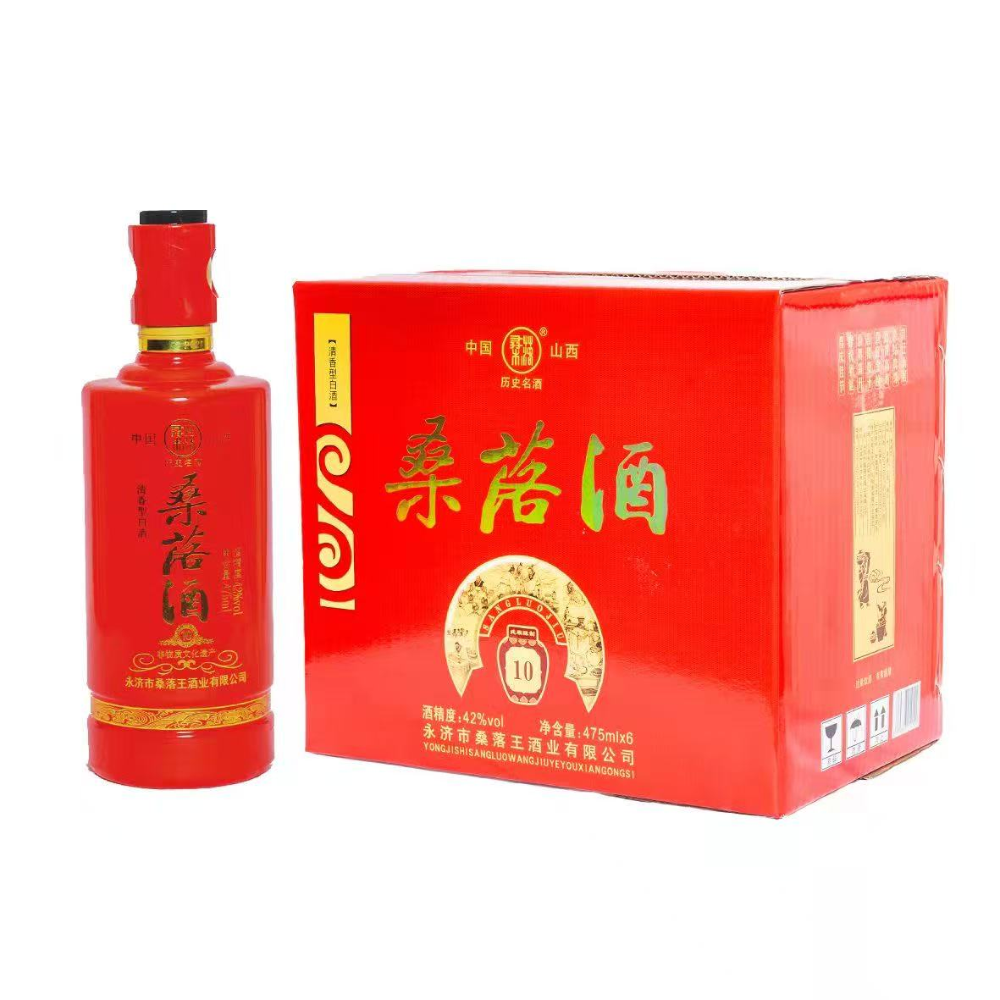

The name "桑落" — Mulberry Fall — speaks of the season: when the mulberry leaves descend each autumn, the sorghum harvest is ready and the ancient distillers knew it was time to brew. It is a name rooted in the land, the climate, and the rhythm of the Yellow River.
Tang dynasty poet Wang Zhihuan climbed the Stork Tower in Yongji, gazed upon the great river winding to the sea, and composed one of China's most celebrated quatrains — a cup of Sang Luo Jiu said to have been in his hand. The spirit and the verse became forever inseparable.
For over fifteen centuries, Sang Luo Jiu has graced the tables of poets, scholars and emperors. No other baijiu has been praised in verse as often — a testament to its extraordinary and enduring character.
欲穷千里目Wang Zhihuan · Ascending Stork Tower · c. AD 700
更上一层楼
Three pillars that have guided every batch for fifteen centuries
Brewing begins when mulberry leaves fall — the traditional signal that temperatures are ideal for fermentation. Every batch honours this ancient agricultural calendar, unchanged since the Northern Dynasties.
Premium sorghum grown in the fertile wetlands beside the Yellow River. The mineral-rich alluvial soil imparts a purity and sweetness that no other growing region can replicate — the essential foundation of Qingxiang style.
Ancient earthenware fermentation pits cultivate generations of unique microorganisms. The longer a pit has been in use, the richer the microbial ecosystem — and the more complex and refined the spirit it produces.
桑 (sāng) — the mulberry tree, symbol of life, nourishment and the natural cycles of the Yellow River wetlands. For millennia, mulberry cultivation has defined the landscape and livelihood of this region.
落 (luò) — to fall; the falling of leaves marking the turn of the season — the moment of harvest, of new beginnings, of the ancient brewmaster's signal to begin.
Together, 桑落 captures everything: the land, the season, the spirit. When you hold a glass of Sang Luo Jiu, you hold fifteen centuries of autumn harvests — of poets at towers, of master distillers keeping faith with an ancient and unbroken craft.
The 6th-century Book of Northern Qi declared: "Puzhou Sang Luo Jiu — its name resounds across the land." We carry that name with pride.


The Book of Northern Qi records Sang Luo Jiu as the finest spirit in China — the earliest surviving written praise of any baijiu still produced to this day.
Wang Zhihuan climbs Stork Tower and composes one of China's most memorised poems. Sang Luo Jiu and Chinese literary tradition become forever intertwined. The spirit graces imperial feasts and is exchanged as the finest gift among scholars.
Sang Luo Jiu is celebrated at imperial courts and scholarly gatherings alike. Its Qingxiang style — pure, clean, floral — is recognised as the pinnacle of the brewer's art in Northern China.
Master distillers pass down the earthenware-pit method through generations of oral tradition, preserving every detail of the craft across centuries of dynastic change.
Yongji Sangluowang Distillery preserves every element of the tradition — the grain, the pits, the season, the craft — and carries the 1,500-year story of Sang Luo Jiu to the world.